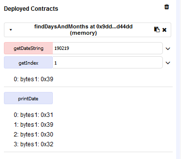
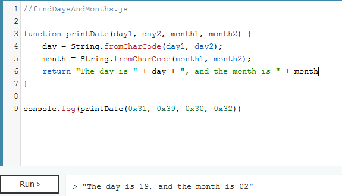

screencapture of remix IDE's output for my contract (printDate returns 4 hex-encoded UTF8 values)

js to format output as per standard algorithms spec.
On reflecting, I think it would be a good idea to first write the browser extension for the existing NoteChain contract [2], and then after becoming more familiar with solidity and understanding how NoteChain’s contract works I could begin to develop my own contract.
I also think it’s a good idea to be backwards-compatible with the existing NoteChain contract (as chances are my contract will be far less efficient).
[1] https://github.com/dylan-lom/std-alg-sol/blob/master/findDaysAndMonths.sol https://github.com/dylan-lom/std-alg-sol/blob/master/findDaysAndMonths.js
[2] https://etherscan.io/address/0xD4737858Dd8eb9842CD0696171b781525B56086f?utm_source=StateOfTheDApps#code
Published: 2019-02-16